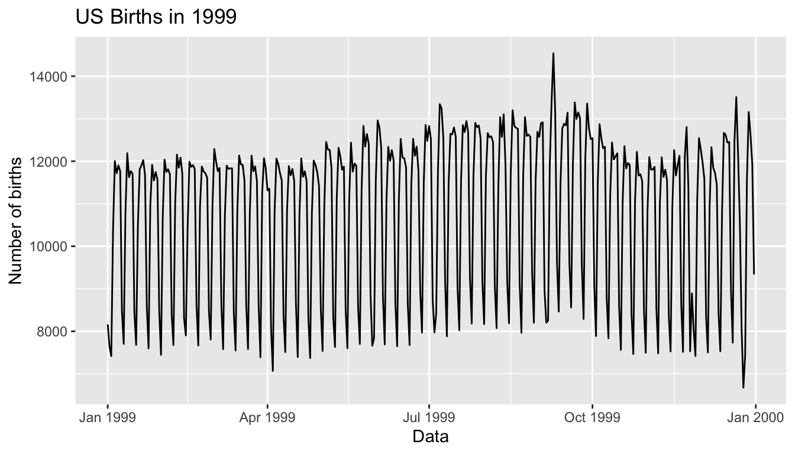

Chapter 12 Thinking with Data
In preparation for our first print edition to be published by CRC Press in Fall 2019, we’re remodeling this chapter a bit. Don’t expect major changes in content, but rather only minor changes in presentation. Our remodeling will be complete and available online at ModernDive.com by early Summer 2019!
Recall in Section 1.1 “Introduction for students” and at the end of chapters throughout this book, we displayed the “ModernDive flowchart” mapping your journey through this book.

FIGURE 12.1: ModernDive Flowchart
Let’s get a refresher of what you’ve covered so far. You first got started with with data in Chapter 2, where you learned about the difference between R and RStudio, started coding in R, started understanding what R packages are, and explored your first dataset: all domestic departure flights from a New York City airport in 2013. Then:
- Data science: You assembled your data science toolbox using
tidyversepackages. In particular: - Data modeling: Using these data science tools and helper functions from the
moderndivepackage, you started performing data modeling. In particular: - Statistical inference: Once again using your newly acquired data science tools, we unpacked statistical inference using the
inferpackage. In particular: - Data modeling revisited: Armed with your new understanding of statistical inference, you revisited and reviewed the models you constructed in Ch.6 & Ch.7. In particular:
- Ch.11: Interpreting both the statistical and practice significance of the results of the models.
All this was our approach of guiding you through your first experiences of “thinking with data”, an expression originally coined by Diane Lambert of Google. How the philosophy underlying this expression guided our mapping of the flowchart above was well put in the introduction to the “Practical Data Science for Stats” collection of preprints focusing on the practical side of data science workflows and statistical analysis, curated by Jennifer Bryan and Hadley Wickham:
There are many aspects of day-to-day analytical work that are almost absent from the conventional statistics literature and curriculum. And yet these activities account for a considerable share of the time and effort of data analysts and applied statisticians. The goal of this collection is to increase the visibility and adoption of modern data analytical workflows. We aim to facilitate the transfer of tools and frameworks between industry and academia, between software engineering and statistics and computer science, and across different domains.
In other words, in order to be equipped to “think with data” in the 21st century, future analysts need preparation going through the entirety of the “Data/Science Pipeline” we also saw earlier and not just parts of it.

FIGURE 12.2: Data/Science Pipeline
In Section 12.1, we’ll take you through full-pass of the “Data/Science Pipeline” where we’ll analyze the sale price of houses in Seattle, WA, USA. In Section 12.2, we’ll present you with examples of effective data storytelling, in particular the articles from the data journalism website FiveThirtyEight.com, many of whose source datasets are accessible from the fivethirtyeight R package.
Needed packages
Let’s load all the packages needed for this chapter (this assumes you’ve already installed them). Read Section 2.3 for information on how to install and load R packages.
library(ggplot2)
library(dplyr)
library(moderndive)
library(fivethirtyeight)12.1 Case study: Seattle house prices
Kaggle.com is a machine learning and predictive modeling competition website that hosts datasets uploaded by companies, governmental organizations, and other individuals. One of their datasets is the House Sales in King County, USA consisting of homes sold in between May 2014 and May 2015 in King County, Washington State, USA, which includes the greater Seattle metropolitan area. This CC0: Public Domain licensed dataset is included in the moderndive package in the house_prices data frame, which we’ll refer to as the “Seattle house prices” dataset.
The dataset consists 21,613 houses and 21 variables describing these houses; for a full list of these variables see the help file by running ?house_prices in the console. In this case study, we’ll create a model using multiple regression where:
- The outcome variable \(y\) is the sale
priceof houses - The two explanatory/predictor variables we’ll use are :
- \(x_1\): house size
sqft_living, as measured by square feet of living space, where 1 square foot is about 0.09 square meters. - \(x_2\): house
condition, a categorical variable with 5 levels where 1 indicates “poor” and 5 indicates “excellent.”
- \(x_1\): house size
Let’s load all the packages needed for this case study (this assumes you’ve already installed them). If needed, read Section 2.3 for information on how to install and load R packages.
library(ggplot2)
library(dplyr)
library(moderndive)12.1.1 Exploratory data analysis (EDA)
A crucial first step before any formal modeling is an exploratory data analysis, commonly abbreviated at EDA. Exploratory data analysis can give you a sense of your data, help identify issues with your data, bring to light any outliers, and help inform model construction. There are three basic approaches to EDA:
- Most fundamentally, just looking at the raw data. For example using RStudio’s
View()spreadsheet viewer or theglimpse()function from thedplyrpackage - Creating visualizations like the ones using
ggplot2from Chapter 3 - Computing summary statistics using the
dplyrdata wrangling tools from Chapter 4
First, let’s look the raw data using View() and the glimpse() function. Explore the dataset. Which variables are numerical and which are categorical? For the categorical variables, what are their levels? Which do you think would useful variables to use in a model for house price? In this case study, we’ll only consider the variables price, sqft_living, and condition. An important thing to observe is that while the condition variable has values 1 through 5, these are saved in R as fct factors i.e. R’s way of saving categorical variables. So you should think of these as the “labels” 1 through 5 and not the numerical values 1 through 5.
View(house_prices)
glimpse(house_prices)Observations: 21,613
Variables: 21
$ id <chr> "7129300520", "6414100192", "5631500400", "2487200875",…
$ date <date> 2014-10-13, 2014-12-09, 2015-02-25, 2014-12-09, 2015-0…
$ price <dbl> 221900, 538000, 180000, 604000, 510000, 1225000, 257500…
$ bedrooms <int> 3, 3, 2, 4, 3, 4, 3, 3, 3, 3, 3, 2, 3, 3, 5, 4, 3, 4, 2…
$ bathrooms <dbl> 1.00, 2.25, 1.00, 3.00, 2.00, 4.50, 2.25, 1.50, 1.00, 2…
$ sqft_living <int> 1180, 2570, 770, 1960, 1680, 5420, 1715, 1060, 1780, 18…
$ sqft_lot <int> 5650, 7242, 10000, 5000, 8080, 101930, 6819, 9711, 7470…
$ floors <dbl> 1.0, 2.0, 1.0, 1.0, 1.0, 1.0, 2.0, 1.0, 1.0, 2.0, 1.0, …
$ waterfront <lgl> FALSE, FALSE, FALSE, FALSE, FALSE, FALSE, FALSE, FALSE,…
$ view <int> 0, 0, 0, 0, 0, 0, 0, 0, 0, 0, 0, 0, 0, 0, 0, 3, 0, 0, 0…
$ condition <fct> 3, 3, 3, 5, 3, 3, 3, 3, 3, 3, 3, 4, 4, 4, 3, 3, 3, 4, 4…
$ grade <fct> 7, 7, 6, 7, 8, 11, 7, 7, 7, 7, 8, 7, 7, 7, 7, 9, 7, 7, …
$ sqft_above <int> 1180, 2170, 770, 1050, 1680, 3890, 1715, 1060, 1050, 18…
$ sqft_basement <int> 0, 400, 0, 910, 0, 1530, 0, 0, 730, 0, 1700, 300, 0, 0,…
$ yr_built <int> 1955, 1951, 1933, 1965, 1987, 2001, 1995, 1963, 1960, 2…
$ yr_renovated <int> 0, 1991, 0, 0, 0, 0, 0, 0, 0, 0, 0, 0, 0, 0, 0, 0, 0, 0…
$ zipcode <fct> 98178, 98125, 98028, 98136, 98074, 98053, 98003, 98198,…
$ lat <dbl> 47.5, 47.7, 47.7, 47.5, 47.6, 47.7, 47.3, 47.4, 47.5, 4…
$ long <dbl> -122, -122, -122, -122, -122, -122, -122, -122, -122, -…
$ sqft_living15 <int> 1340, 1690, 2720, 1360, 1800, 4760, 2238, 1650, 1780, 2…
$ sqft_lot15 <int> 5650, 7639, 8062, 5000, 7503, 101930, 6819, 9711, 8113,…Let’s now perform the second possible approach to EDA: creating visualizations. Since price and sqft_living are numerical variables, an appropriate way to visualize of these variables’ distributions would be using a histogram using a geom_histogram() as seen in Section 3.5. However, since condition is categorical, a barplot using a geom_bar() yields an appropriate visualization of its distribution. Recall from Section 3.8 that since condition is not “pre-counted”, we use a geom_bar() and not a geom_col(). In Figure 12.3, we display all three of these visualizations at once.
# Histogram of house price:
ggplot(house_prices, aes(x = price)) +
geom_histogram(color = "white") +
labs(x = "price (USD)", title = "House price")
# Histogram of sqft_living:
ggplot(house_prices, aes(x = sqft_living)) +
geom_histogram(color = "white") +
labs(x = "living space (square feet)", title = "House size")
# Barplot of condition:
ggplot(house_prices, aes(x = condition)) +
geom_bar() +
labs(x = "condition", title = "House condition")FIGURE 12.3: Exploratory visualizations of Seattle house prices data
We observe the following:
- In the histogram for
price:- Since
e+06means \(10^6\), or one million, we see that a majority of houses are less than 2 million dollars. - The x-axis stretches out far to the right to 8 million dollars, even though there appear to be no houses.
- Since
- In the histogram for size
sqft_living- Most houses appear to have less than 5000 square feet of living space. For comparison a standard American football field is about 57,600 square feet, where as a standard soccer AKA association football field is about 64,000 square feet.
- The x-axis exhibits the same stretched out behavior to the right as for
price
- Most houses are of
condition3, 4, or 5.
In the case of price, why does the x-axis stretch so far to the right? It is because there are a very small number of houses with price closer to 8 million; these prices are outliers in this case. We say variable is “right skewed” as exhibited by the long right tail. This skew makes it difficult to compare prices of the less expensive houses as the more expensive houses dominate the scale of the x-axis. This is similarly the case for sqft_living.
Let’s now perform the third possible approach to EDA: computing summary statistics. In particular, let’s compute 4 summary statistics using the summarize() data wrangling verb from Section 4.3.
- Two measures of center: the mean and median
- Two measures of variability/spread: the standard deviation and interquartile-range (IQR = 3rd quartile - 1st quartile)
house_prices %>%
summarize(
mean_price = mean(price),
median_price = median(price),
sd_price = sd(price),
IQR_price = IQR(price)
)# A tibble: 1 x 4
mean_price median_price sd_price IQR_price
<dbl> <dbl> <dbl> <dbl>
1 540088. 450000 367127. 323050Observe the following:
- The mean
priceof $540,088 is larger than the median of $450,000. This is because the small number of very expensive outlier houses prices are inflating the average, whereas since the median is the “middle” value, it is not as sensitive to such large values at the high end. This is why the news typically reports median house prices and not average house prices when describing the real estate market. We say here that the median more “robust to outliers” than the mean. - Similarly, while both the standard deviation and IQR are both measures of spread and variability, the IQR is more “robust to outliers.”
If you repeat the above summarize() for sqft_living, you’ll find a similar relationship between mean vs median and standard deviation vs IQR given its similar right-skewed nature. Is there anything we can do about this right-skew? Again, this could potentially be an issue because we’ll have a harder time discriminating between houses at the lower end of price and sqft_living, which might lead to a problem when modeling.
We can in fact address this issue by using a log base 10 transformation, which we cover next.
12.1.2 log10 transformations
At its simplest, log10() transformations returns base 10 logarithms. For example, since \(1000 = 10^3\), log10(1000) returns 3. To undo a log10-transformation, we raise 10 to this value. For example, to undo the previous log10-transformation and return the original value of 1000, we raise 10 to this value \(10^{3}\) by running 10^(3) = 1000. log-transformations allow us to focus on multiplicative changes instead of additive ones, thereby emphasizing changes in “orders of magnitude.” Let’s illustrate this idea in Table 12.1 with examples of prices of consumer goods in US dollars.
| Price | log10(Price) | Order of magnitude | Examples |
|---|---|---|---|
| $1 | 0 | Singles | Cups of coffee |
| $10 | 1 | Tens | Books |
| $100 | 2 | Hundreds | Mobile phones |
| $1,000 | 3 | Thousands | High definition TV’s |
| $10,000 | 4 | Tens of thousands | Cars |
| $100,000 | 5 | Hundreds of thousands | Luxury cars & houses |
| $1,000,000 | 6 | Millions | Luxury houses |
Let’s break this down:
- When purchasing a cup of coffee, we tend to think of prices ranging in single dollars e.g. $2 or $3. However when purchasing say mobile phones, we don’t tend to think in prices in single dollars e.g. $676 or $757, but tend to round to the nearest unit of hundreds of dollars e.g. $200 or $500.
- Let’s say we want to know the log10-transformed value of $76. Even if this would be hard to compute without a calculator, we know that its log10 value is between 1 and 2, since $76 is between $10 and $100. In fact,
log10(76)is 1.880814. - log10-transformations are monotonic, meaning they preserve orderings. So if Price A is lower than Price B, then log10(Price A) will also be lower than log10(Price B).
- Most importantly, increments of one in log10 correspond to multiplicative changes and not additive ones. For example, increasing from log10(Price) of 3 to 4 corresponds to a multiplicative increase by a factor of 10: $100 to $1000.
Let’s create new log10-transformed versions of the right-skewed variable price and sqft_living using the mutate() function from Section 4.5, but we’ll give the latter the name log10_size, which is a little more succinct and descriptive a variable name.
house_prices <- house_prices %>%
mutate(
log10_price = log10(price),
log10_size = log10(sqft_living)
)Let’s first display the before and after effects of this transformation on these variables for only the first 10 rows of house_prices:
house_prices %>%
select(price, log10_price, sqft_living, log10_size)# A tibble: 10 x 4
price log10_price sqft_living log10_size
<dbl> <dbl> <int> <dbl>
1 221900 5.35 1180 3.07
2 538000 5.73 2570 3.41
3 180000 5.26 770 2.89
4 604000 5.78 1960 3.29
5 510000 5.71 1680 3.23
6 1225000 6.09 5420 3.73
7 257500 5.41 1715 3.23
8 291850 5.47 1060 3.03
9 229500 5.36 1780 3.25
10 323000 5.51 1890 3.28Observe in particular:
- The house in the 6th row with
price$1,225,000, which is just above one million dollars. Since \(10^6\) is one million, itslog10_priceis 6.09. Contrast this with all other houses withlog10_priceless than 6. - Similarly, there is only one house with size
sqft_livingless than 1000. Since \(1000 = 10^3\), its the lone house withlog10_sizeless than 3.
Let’s now visualize the before and after effects of this transformation for price in Figure 12.4.
# Before:
ggplot(house_prices, aes(x = price)) +
geom_histogram(color = "white") +
labs(x = "price (USD)", title = "House price: Before")
# After:
ggplot(house_prices, aes(x = log10_price)) +
geom_histogram(color = "white") +
labs(x = "log10 price (USD)", title = "House price: After")FIGURE 12.4: House price before and after log10-transformation
Observe that after the transformation, the distribution is much less skewed, and in this case, more symmetric and bell-shaped, although this isn’t always necessarily the case. Now you can now better discriminate between house prices at the lower end of the scale. Let’s do the same for size where the before variable is sqft_living and the after variable is log10_size. Observe in Figure 12.5 that the log10-transformation has a similar effect of un-skewing the variable. Again, we emphasize that while in these two cases the resulting distributions are more symmetric and bell-shaped, this is not always necessarily the case.
# Before:
ggplot(house_prices, aes(x = sqft_living)) +
geom_histogram(color = "white") +
labs(x = "living space (square feet)", title = "House size: Before")
# After:
ggplot(house_prices, aes(x = log10_size)) +
geom_histogram(color = "white") +
labs(x = "log10 living space (square feet)", title = "House size: After")FIGURE 12.5: House size before and after log10-transformation
Given the now un-skewed nature of log10_price and log10_size, we are going to revise our modeling structure:
- We’ll use a new outcome variable \(y\)
log10_priceof houses - The two explanatory/predictor variables we’ll use are:
- \(x_1\): A modified version of house size:
log10_size - \(x_2\): House
conditionwill remain unchanged
- \(x_1\): A modified version of house size:
12.1.3 EDA Part II
Let’s continue our exploratory data analysis from Subsection 12.1.1 above. The earlier EDA you performed was univariate in nature in that we only considered one variable at a time. The goal of modeling, however, is to explore relationships between variables. So we must jointly consider the relationship between the outcome variable log10_price and the explanatory/predictor variables log10_size (numerical) and condition (categorical). We viewed such a modeling scenario in Section 7.2 using the evals dataset, where the outcome variable was teaching score, the numerical explanatory/predictor variable was instructor age and the categorical explanatory/predictor variable was (binary) gender.
We have two possible visual models. Either a parallel slopes model in Figure 12.6 where we have a different regression line for each of the 5 possible condition levels, each with a different intercept but the same slope:
FIGURE 12.6: Parallel slopes model
Or an interaction model in Figure 12.7, where we allow each regression line to not only have different intercepts, but different slopes as well:
ggplot(house_prices, aes(x = log10_size, y = log10_price, col = condition)) +
geom_point(alpha = 0.1) +
labs(y = "log10 price", x = "log10 size", title = "House prices in Seattle") +
geom_smooth(method = "lm", se = FALSE)
FIGURE 12.7: Interaction model
In both cases, we see there is a positive relationship between house price and size, meaning as houses are larger, they tend to be more expensive. Furthermore, in both plots it seems that houses of condition 5 tend to be the most expensive for most house sizes as evidenced by the fact that the purple line is highest, followed by condition 4 and 3. As for condition 1 and 2, this pattern isn’t as clear, as if you recall from the univariate barplot of condition in Figure 12.3 there are very few houses of condition 1 or 2. This reality is more apparent in an alternative visualization to Figure 12.7 displayed in Figure 12.8 that uses facets instead:
ggplot(house_prices, aes(x = log10_size, y = log10_price, col = condition)) +
geom_point(alpha = 0.3) +
labs(y = "log10 price", x = "log10 size", title = "House prices in Seattle") +
geom_smooth(method = "lm", se = FALSE) +
facet_wrap(~condition)FIGURE 12.8: Interaction model with facets
Which exploratory visualization of the interaction model is better, the one in Figure 12.7 or Figure 12.8? There is no universal right answer, you need to make a choice depending on what you want to convey, and own it.
12.1.4 Regression modeling
For now let’s focus on the latter, interaction model we’ve visualized in Figure 12.8 above. What are the 5 different slopes and intercepts for the condition = 1, condition = 2, …, and condition = 5 lines in Figure 12.8? To determine these, we first need the values from the regression table:
# Fit regression model:
price_interaction <- lm(log10_price ~ log10_size * condition, data = house_prices)
# Get regression table:
get_regression_table(price_interaction)# A tibble: 10 x 7
term estimate std_error statistic p_value lower_ci upper_ci
<chr> <dbl> <dbl> <dbl> <dbl> <dbl> <dbl>
1 intercept 3.33 0.451 7.38 0 2.45 4.22
2 log10_size 0.69 0.148 4.65 0 0.399 0.98
3 condition2 0.047 0.498 0.094 0.925 -0.93 1.02
4 condition3 -0.367 0.452 -0.812 0.417 -1.25 0.519
5 condition4 -0.398 0.453 -0.879 0.38 -1.29 0.49
6 condition5 -0.883 0.457 -1.93 0.053 -1.78 0.013
7 log10_size:condition2 -0.024 0.163 -0.148 0.882 -0.344 0.295
8 log10_size:condition3 0.133 0.148 0.893 0.372 -0.158 0.424
9 log10_size:condition4 0.146 0.149 0.979 0.328 -0.146 0.437
10 log10_size:condition5 0.31 0.15 2.07 0.039 0.016 0.604Recall from Section 7.2.3 on how to interpret the outputs where there exists an interaction term, where in this case the “baseline for comparison” group for the categorical variable condition are the condition 1 houses. We’ll write our answers as:
\[\widehat{\log10(\text{price})} = \hat{\beta}_0 + \hat{\beta}_{\text{size}} * \log10(\text{size})\]
for all five condition levels separately:
- Condition 1: \(\widehat{\log10(\text{price})} = 3.33 + 0.69 * \log10(\text{size})\)
- Condition 2: \(\widehat{\log10(\text{price})} = (3.33 + 0.047) + (0.69 - 0.024) * \log10(\text{size}) = 3.38 + 0.666 * \log10(\text{size})\)
- Condition 3: \(\widehat{\log10(\text{price})} = (3.33 - 0.367) + (0.69 + 0.133) * \log10(\text{size}) = 2.96 + 0.823 * \log10(\text{size})\)
- Condition 4: \(\widehat{\log10(\text{price})} = (3.33 - 0.398) + (0.69 + 0.146) * \log10(\text{size}) = 2.93 + 0.836 * \log10(\text{size})\)
- Condition 5: \(\widehat{\log10(\text{price})} = (3.33 - 0.883) + (0.69 + 0.31) * \log10(\text{size}) = 2.45 + 1 * \log10(\text{size})\)
These correspond to the regression lines in the exploratory visualization of the interaction model in Figure 12.7 above. For homes of all 5 condition types, as the size of the house increases, the prices increases. This is what most would expect. However, the rate of increase of price with size is fastest for the homes with condition 3, 4, and 5 of 0.823, 0.836, and 1 respectively; these are the 3 most largest slopes out of the 5.
12.1.5 Making predictions
Say you’re a realtor and someone calls you asking you how much their home will sell for. They tell you that it’s in condition = 5 and is sized 1900 square feet. What do you tell them? We first make this prediction visually in Figure 12.9. The predicted log10_price of this house is marked with a black dot: it is where the two following lines intersect:
- The purple regression line for the condition = 5 homes and
- The vertical dashed black line at
log10_sizeequals 3.28, since our predictor variable is the log10-transformed square feet of living space and \(\log10(1900) = 3.28\) .
FIGURE 12.9: Interaction model with prediction
Eyeballing it, it seems the predicted log10_price seems to be around 5.72. Let’s now obtain the an exact numerical value for the prediction using the values of the intercept and slope for the condition = 5 that we computed using the regression table output. We use the equation for the condition = 5 line, being sure to log10() the
square footage first.
2.45 + 1 * log10(1900)[1] 5.73This value is very close to our earlier visually made prediction of 5.72. But wait! We were using the outcome variable log10_price as our outcome variable! So if we want a prediction in terms of price in dollar units, we need to un-log this by taking a power of 10 as described in Section 12.1.2.
10^(2.45 + 1 * log10(1900))[1] 535493So we our predicted price for this home of condition 5 and size 1900 square feet is $535,493.
Learning check
(LC12.1) Repeat the regression modeling in Subsection 12.1.4 and the prediction making you just did on the house of condition 5 and size 1900 square feet in Subsection 12.1.5, but using the parallel slopes model you visualized in Figure 12.6. Hint: it’s $524,807!
12.2 Case study: Effective data storytelling
Note: This section is still under construction. If you would like to contribute, please check us out on GitHub at https://github.com/moderndive/moderndive_book.
As we’ve progressed throughout this book, you’ve seen how to work with data in a variety of ways. You’ve learned effective strategies for plotting data by understanding which types of plots work best for which combinations of variable types. You’ve summarized data in table form and calculated summary statistics for a variety of different variables. Further, you’ve seen the value of inference as a process to come to conclusions about a population by using a random sample. Lastly, you’ve explored how to use linear regression and the importance of checking the conditions required to make it a valid procedure. All throughout, you’ve learned many computational techniques and focused on reproducible research in writing R code. We now present another case study, but this time of the “effective data storytelling” done by data journalists around the world. Great data stories don’t mislead the reader, but rather engulf them in understanding the importance that data plays in our lives through the captivation of storytelling.
12.2.1 Bechdel test for Hollywood gender representation
We recommend you read and analyze this article by Walt Hickey entitled The Dollar-And-Cents Case Against Hollywood’s Exclusion of Women on the Bechdel test, an informal test of gender representation in a movie. As you read over it, think carefully about how Walt is using data, graphics, and analyses to paint the picture for the reader of what the story is he wants to tell. In the spirit of reproducibility, the members of FiveThirtyEight have also shared the data and R code that they used to create for this story and many more of their articles on GitHub.
ModernDive co-authors Chester Ismay and Albert Y. Kim along with Jennifer Chunn went one step further by creating the fivethirtyeight R package. The fivethirtyeight package takes FiveThirtyEight’s article data from GitHub, “tames” it so that it’s novice-friendly, and makes all data, documentation, and the original article easily accessible via an R package.
The package homepage also includes a list of all fivethirtyeight data sets included.
Furthermore, example “vignettes” of fully reproducible start-to-finish analyses of some of these data using dplyr, ggplot2, and other packages in the tidyverse is available here. For example, a vignette showing how to reproduce one of the plots at the end of the above article on the Bechdel test is available here.
12.2.2 US Births in 1999
Here is another example involving the US_births_1994_2003 data frame of all births in the United States between 1994 and 2003. For more information on this data frame including a link to the original article on FiveThirtyEight.com, check out the help file by running ?US_births_1994_2003 in the console. First, let’s load all necessary packages:
library(ggplot2)
library(dplyr)
library(fivethirtyeight)It’s always a good idea to preview your data, either by using RStudio’s spreadsheet View() function or using glimpse() from the dplyr package below:
# Preview data
glimpse(US_births_1994_2003)Observations: 3,652
Variables: 6
$ year <int> 1994, 1994, 1994, 1994, 1994, 1994, 1994, 1994, 1994, 1…
$ month <int> 1, 1, 1, 1, 1, 1, 1, 1, 1, 1, 1, 1, 1, 1, 1, 1, 1, 1, 1…
$ date_of_month <int> 1, 2, 3, 4, 5, 6, 7, 8, 9, 10, 11, 12, 13, 14, 15, 16, …
$ date <date> 1994-01-01, 1994-01-02, 1994-01-03, 1994-01-04, 1994-0…
$ day_of_week <ord> Sat, Sun, Mon, Tues, Wed, Thurs, Fri, Sat, Sun, Mon, Tu…
$ births <int> 8096, 7772, 10142, 11248, 11053, 11406, 11251, 8653, 79…We’ll focus on the number of births for each date, but only for births that occurred in 1999. Recall we achieve this using the filter() command from dplyr package:
US_births_1999 <- US_births_1994_2003 %>%
filter(year == 1999)Since date is a notion of time, which has a sequential ordering to it, a linegraph AKA a “time series” plot would be more appropriate than a scatterplot. In other words, use a geom_line() instead of geom_point():
ggplot(US_births_1999, aes(x = date, y = births)) +
geom_line() +
labs(x = "Data", y = "Number of births", title = "US Births in 1999")
We see a big valley occurring just before January 1st, 2000, mostly likely due to the holiday season. However, what about the major peak of over 14,000 births occurring just before October 1st, 1999? What could be the reason for this anomalously high spike in ? Time to think with data!
12.2.3 Other examples
Stand by!
12.2.4 Script of R code
An R script file of all R code used in this chapter is available here.
Concluding remarks
If you’ve come to this point in the book, I’d suspect that you know a thing or two about how to work with data in R. You’ve also gained a lot of knowledge about how to use simulation techniques to determine statistical significance and how these techniques build an intuition about traditional inferential methods like the \(t\)-test. The hope is that you’ve come to appreciate data wrangling, tidy datasets, and the power of data visualization. Actually, the data visualization part may be the most important thing here. If you can create truly beautiful graphics that display information in ways that the reader can clearly decipher, you’ve picked up a great skill. Let’s hope that that skill keeps you creating great stories with data into the near and far distant future. Thanks for coming along for the ride as we dove into modern data analysis using R!